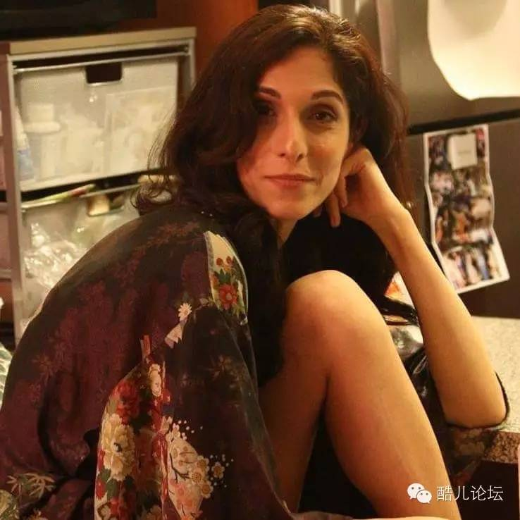

【同声传译】Pooya mohseni:我是一个生在男人身体里的女人

我是一个生在男人身体里的女人
翻译： 文文 编辑：Owen
原载于Medium
先让我做个自我介绍吧：我叫Pooya，我是一个生在男人身体里的女人。我出生在一个远没有可以随意谈论甚至承认自己这一身份的年代。大多数人似乎对于我这样的跨性别者有着些许的困惑。
作为跨性别者，我们自己是完全不觉得有什么问题——至少我们中的大多数是这样的。我们很早就十分清楚地知道我们是谁。混乱、困惑、自我厌恶和怀疑都源自于为了满足外部世界对我们的期望而努力的过程。
来自于这个世界的压力—我们的父母、老师、朋友、邻居和其他人—强迫我们不停地逼问自己对于我们来说是十分自然的事情，并且促使我们隐藏自己的身份，尽全力去遵守这个世界的秩序，融入“普通人”之中，变得“透明”。
对于成长在八十年代的伊朗的我来说，不管是和女孩子玩耍或者玩女孩子的玩具都完全没有问题（注：伊朗伊斯兰革命发生在七十年代末，之前是完全西化的社会）。但是随着我年纪的增长，我意识到别人是如何看待我的。我开始感觉到人们不认可的表情并听到一些风言风语。我开始掩饰，扮演一个与真实的自己完全不同的我。试着成为一个男孩是一项我难以完成的任务，因为我已经坚持地太久了。
你可以想象有多少孩子和年轻人仅仅因为他们与众不同而不得不隐藏自己真实的一面吗？
跨性别的孩子们被当作怪人、恶棍和有病的人对待，（仅仅）因为他们不符合这个社会非黑即白的性别角色。难道用质疑来给他们施压而牺牲哪怕只是一个灵魂不都是一件令人羞耻的事吗？质疑他们的身份和他们在社会中的归属，质疑他们是否值得以他们本来的样子被爱和尊重，质疑他们生存的权力。这一切质疑却仅仅因为他们是跨性别者。
伊朗是一个跨性别者不存在的地方：没有人讨论他们（我不是说一个跨性别的生理表现或者跨性别个体都没有）。我感觉自己好像是这个世界上唯一一个与众不同的人。我是这么的被排除在外，我很有可能是从火星来的！我感觉好孤独。和众多的跨性别的兄弟姐妹们一样，我多次尝试过自杀。我看不到活下去的希望和未来，我除了心痛什么都没有带来，这样的存在一点必要都没有。
我的心情一直如前文所说的一样，我说的东西，我的想法和我的梦想使得我周围的人犹如看待一盘屎一样的看待我。那么你还能怪罪我以及和我一样的人放弃自己的生命吗，把自己从这个不能接受我们的本来面目的世界解脱出去。
慢慢的我长大了，从家乡搬了出去，离开了朋友和留下的记忆，以及原来的生活方式和用了十八年来形成的那个身份。自从在纽约开始了新的历险，我看到了我周围的人的痛苦，那些仍旧迷茫害怕着的人们。
我终于能够接受我的过去，主要是接受那些不那么友善的人，因为他们的无知。
作为一个跨性别者，我需要做出许多决定，但其中有一个对我来说特别重要的是：我是否想要降低自己的身价去憎恨、漠视或者偏执地对待那些曾让我受委屈的人，或者我可以不受他们的影响而把每个人都当作周围环境的一个物品，只是怪罪人们对于跨性别者的不了解。
刚来纽约的时候，我没有符合我的社会性别的衣服。我是一个新来的移民——钱还不容易赚。请相信我绝对不认为这是一个只有移民才会有的问题。我亲眼见证了许多LGBT的年轻人不是自己离家出走就是被家人赶出门，并且几乎没有生活来源。
我有好多好多的问题：我要以怎样的身份工作？我穿什么？要化妆吗？妆会不会太浓了？
大多数人理所当然地认为我们从我们周围的榜样身上学习——而大多数跨性别者没有榜样。至少在我刚来美国的时候没有。我们不得不自己探索要如何生活，并且以和顺性别者完全不同的方式成长。十分不幸的是，对于跨性别者们来说，我们很少能在自己到底是谁这一点上得到肯定。
然后就是约会的问题，和谁，在哪里，怎么约会？这是一个完全独立的话题，因为对跨性别者们来说，大多数约会的基本准则在许多方面都和异性恋、同性恋、双性恋不一样。社会加给跨性别者的暴力太多了。尤其是对于跨性别的女人，约会并找到一个伴侣简直一场危险到了极点的冒险。
我在最后祝愿跨性别者们在未来能够走出阴影，生活在阳光之下，认识到自己只是人类这个大家庭中美好的一部分。
爱你们，十分感谢。
Pooya
对于跨性别你有什么想说的，或者有什么疑惑吗？欢迎点击“阅读原文”和大家讨论~
酷儿论坛
致力于为杭州学生同志群体营造一个多元、健康、平等的环境，促进自我认同和社会认可
我们在此也呼吁大家为论坛捐款，所用款项将用于日常活动、论坛运营和杭州同志中心！~